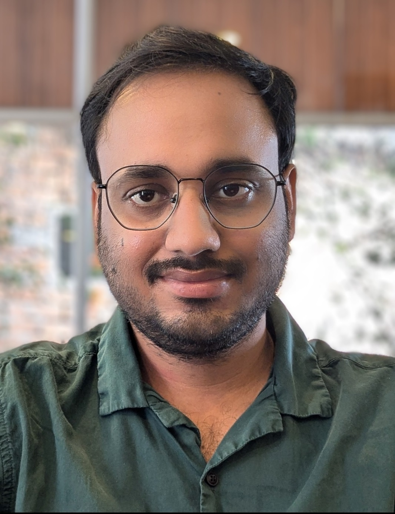

Satyaghosh Maurya
I study how proteins and membranes move, fold, and assemble — one molecule at a time.
I am a postdoctoral researcher in the Gilad Haran Lab, Department of Chemical and Biological Physics, Weizmann Institute of Science, where I develop single-molecule fluorescence and plasmonic sensing methods — including zero-mode waveguides (ZMWs) and Bayesian inference approaches — to watch individual proteins fold and interact in real time.
Research interests
I use single-molecule fluorescence techniques — smFRET combined with plasmonic zero-mode waveguides (ZMWs) — to watch individual proteins fold and interact, catching transition paths and rare conformational events that bulk measurements average away. To make sense of the noisy single-molecule signal, I develop Bayesian inference methods for extracting reliable kinetics. My PhD work focused on membrane biophysics: the assembly of pore-forming proteins and molecular crowding on lipid membranes. More on the Research page.
Currently
Postdoctoral Fellow — Department of Chemical and Biological Physics, Weizmann Institute of Science, Gilad Haran Lab (Dec 2022–present)
Ph.D., Chemical Engineering — Indian Institute of Science (IISc) Bangalore (2015–2022)